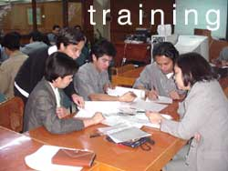

Process
Review and Improvement Office : Updates
Busy Buddies
What PRIO has been up to:
by Joel Kisteria

- We’ve lined up seven (7) TQM training modules for
the whole University for this SY 0304. And recently we attracted
participants from DLSU-Lipa. They have reserved for slots
on designated schedules until the 3rd term already. With this,
we know that we’re continuously improving.
- Since last school year, PRIO has been involved with the
systems investigation of the research process in the University.
This is inline with the Manage Research Project. The ITC group
(composed of SMO, DAO, and PRIO) is working together in developing
the “Research Database” for URCO. And the last
week of September, until October, is the schedule for streamlining
the processes.
- The eQuality page – the webpage where you can find
quality-related articles and stuff inside the University,
well… is serving it’s purpose. With the help of
the ever-committed ITC Web team, the eQuality page is progressing.
Farewell
to our friend…
by: Patricia B. Antonio
It has been a great experience working with Rina…she
has been an inspiration to our group. We will surely miss
the good times and moments we have shared and simply the person
that she is. To name a few:
… her stories about Josh & Gabby
...the text messages of Ed while we are having our PRIO meeting
… her burp after each meal harharhar!
… her love for food
… her sweet smile
… her higher than normal tone of voice
… her happy disposition
… her smiling face that brightens up our morning
… her dedication for her work
… our being “ourselves” when we talk to
her, when we air our concerns
… our “mommy” sharings
… her budgeting expertise
… her supply of “dingdongs”
we will surely miss rina…because aside from being an
effective boss, she is a sincere friend….
Let me talk about a lady
by Joel Kisteria
Let me talk about a lady.
___
In her search…
Remember the lady? I bet you do.
She’s got a very distinctive laugh.
She’s got a determination that’s tough.
She’s a family woman, that’s cool.
She’s industrious here at work, in school.
Yep, I’m talking about her… RINA.
She had been PRIO’s main guy…er, main girl for
some time. Her recent “goodbye” to the group and
to ITC sure is both bad and good news. Bad, coz she’s
a good and a focused leader… easy to talk to, simple
and happy. Time management is never a dilemma to her; she’s
good with it. And I believe there’s more fitting description.
Good, coz I know she found what she’s looking for, and
she’ll be practicing what she’s really good at…Operations
Research and all that IE stuff. And knowing she’s happy
with that, we’ll that’s cool!
Well, to Rina…let’s keep in touch
|